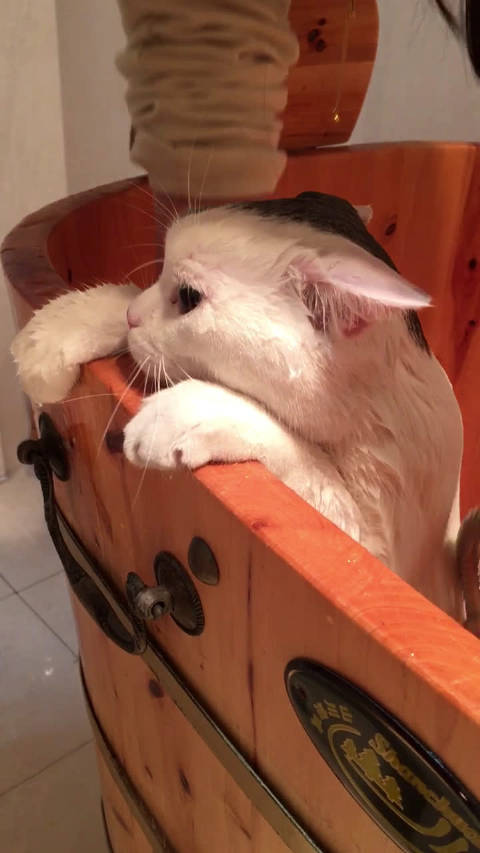

每次给猫弟小辉洗澡就会感叹：它不能再胖了，毛都淋湿了，也没见身型缩水。我跟#姣姣#说小辉不喜欢洗澡，但硬给它洗，它也不反抗，逆来顺受的。姣姣说：有点儿像我。
小辉对家里打印机极其有兴趣，打印机启动的声音就能把它从任何地方唤出来，然后每张打印纸出来，它就努力想把自己的胖脑袋拱进纸槽，试图一探究竟。
慧慧说小辉又呆又萌，姣姣说小辉又笨又怂。然后慧慧就嘲笑姣姣啦，是谁说过猫的性格随主人呢？
 Ada李力的秒拍视频
Ada李力的秒拍视频
小辉对家里打印机极其有兴趣，打印机启动的声音就能把它从任何地方唤出来，然后每张打印纸出来，它就努力想把自己的胖脑袋拱进纸槽，试图一探究竟。
慧慧说小辉又呆又萌，姣姣说小辉又笨又怂。然后慧慧就嘲笑姣姣啦，是谁说过猫的性格随主人呢？

1400次播放
00:60